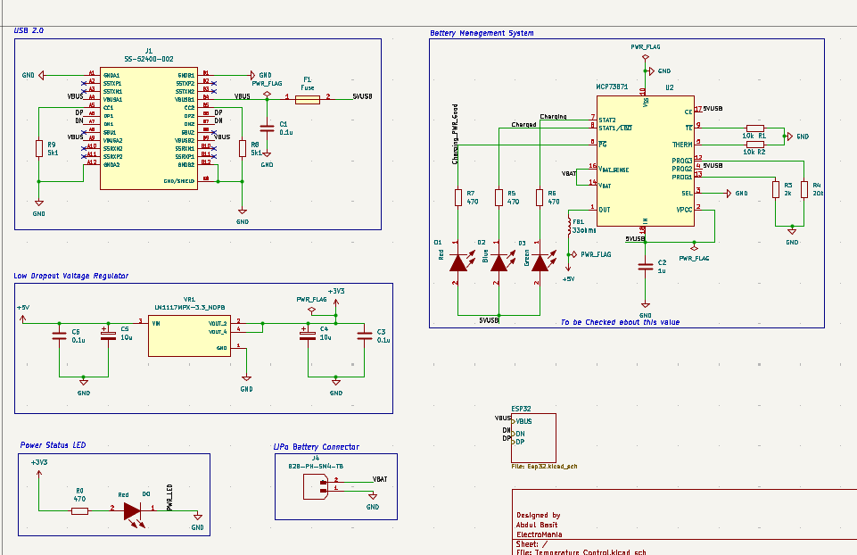
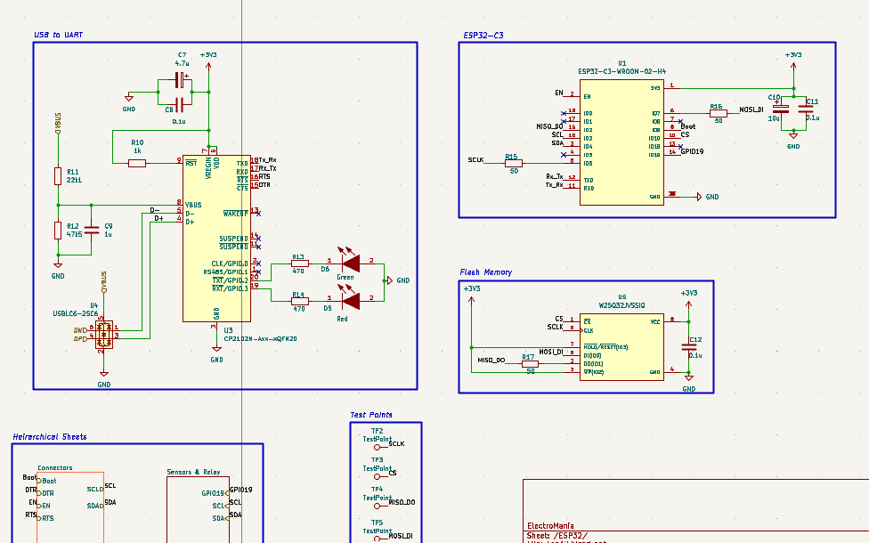
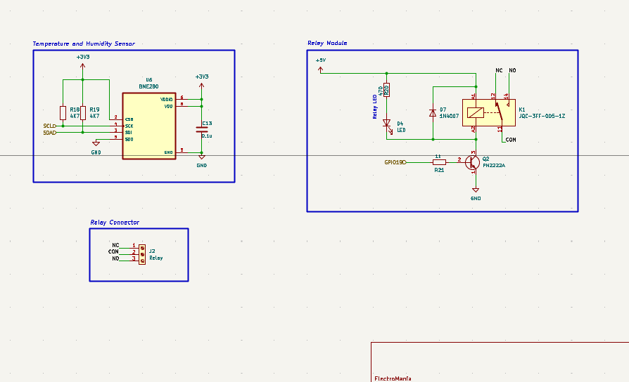
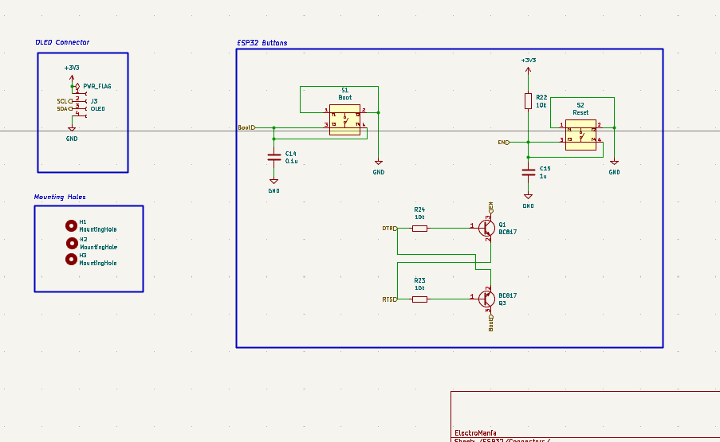
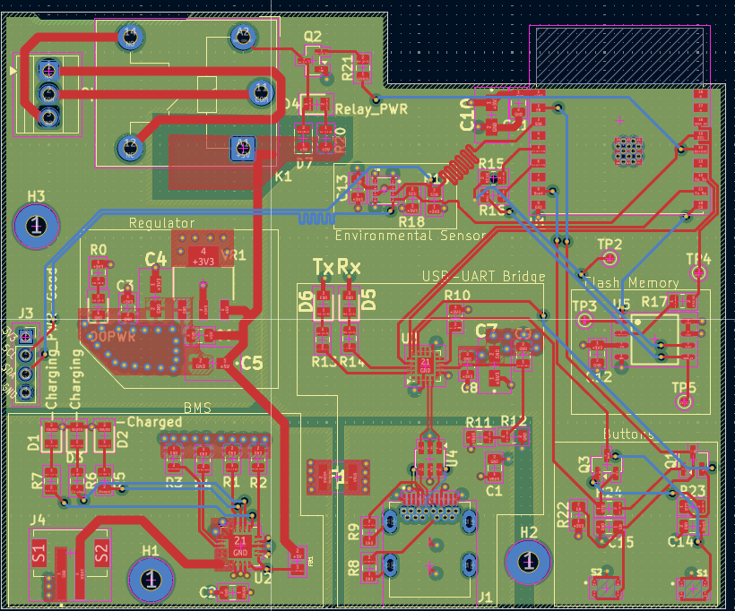
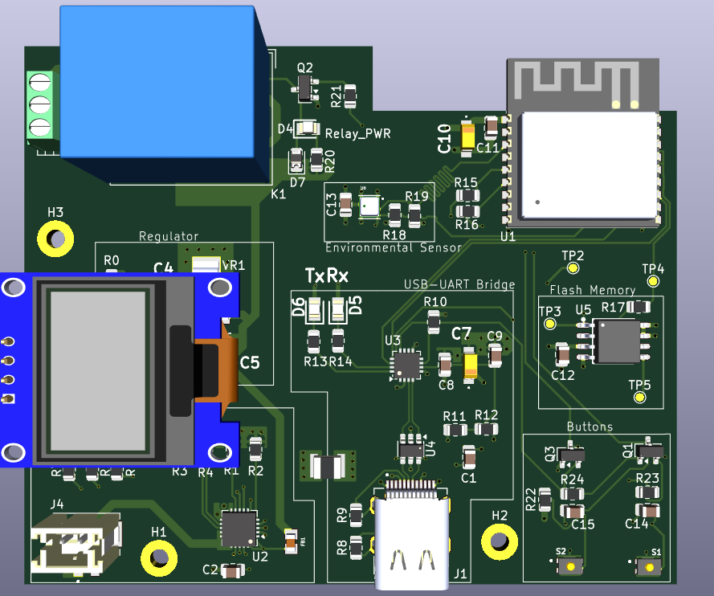

A battery-powered ESP32-C3 sensor node that reads ambient temperature and humidity, automatically drives a relay-controlled fan, and displays live status on an OLED — built around a complete custom Li-ion BMS and a 4-layer PCB.
This project presents a compact, battery-powered ESP32-C3 sensor node that automatically controls a cooling fan based on ambient temperature, while displaying live status on an OLED screen. A BME280 sensor supplies temperature and humidity data over I²C, and once a set threshold is crossed the ESP32-C3 drives a relay stage to switch the fan on or off. The board also integrates a complete Li-ion/LiPo battery management system (BMS) with USB charging, an onboard CP2102N USB-to-UART bridge with automatic reset/boot circuitry for one-cable programming, and an external SPI flash chip for extra storage — all laid out on a 4-layer PCB with length-tuned I²C routing.
USB power enters through connector J1 (protected by inline fuse F1) and feeds the MCP73871 charge management IC (U2), which manages single-cell Li-ion/LiPo charging through battery connector J4. Charge current is set by programming resistors R3/R4, THERM bias resistors R1/R2 monitor battery temperature, and status LEDs D1 (red), D2 (blue) and D3 (green) indicate charging/charged/fault conditions. The MCP73871's regulated output feeds the LM1117MPX-3.3 LDO (VR1), which supplies the clean 3.3 V logic rail for the ESP32-C3 and all onboard peripherals, with a separate power-good LED confirming the 3.3 V rail is live.

The ESP32-C3-WROOM-02-H4 module (U1) is the main processor, with its GPIOs broken out through the hierarchical connector and sensor/relay sheets. Onboard programming is handled by the CP2102N-A02-GQFN20 USB-to-UART bridge (U3), which brings VBUS and D+/D− in from the USB connector and connects TX/RX directly to the ESP32-C3. Two BC817 transistors (Q1, Q3), switched from the CP2102N's DTR and RTS lines, automatically sequence the module's EN and boot pins for one-cable, auto-reset firmware uploads, backed up by manual Boot (S1) and Reset (S2) tactile switches. A W25Q32JVSSIQ SPI flash chip (U5) adds 32 Mbit of external storage, with its SPI bus (SCLK, CS, MISO, MOSI) broken out to test points TP2–TP5 for bring-up and debug.

A BME280 sensor (U6) provides temperature and humidity readings over I²C, with SCL/SDA pulled up through R18/R19 (4.7 kΩ). In firmware, once the measured temperature crosses a set threshold, GPIO19 drives base resistor R21 into transistor Q2 (PN2222A), which energizes the coil of relay K1 (JQC-3FF-005-1Z). Flyback diode D7 protects Q2 from the coil's inductive kick, while LED D4 gives a visual indication whenever the relay is engaged. The relay's NC/CON/NO contacts are broken out to 3-pin connector J2, allowing an external fan (or a similar load) to be wired in and switched directly by the board.

A 4-pin I²C header (J3: SCL, SDA, 3V3, GND) lets an external OLED module be connected for a live readout of temperature, humidity, and fan state, sharing the same I²C bus as the BME280. Alongside it, the Boot (S1) and Reset (S2) tactile switches, together with the BC817-based DTR/RTS auto-reset circuit, give both manual and automatic control over entering the ESP32-C3's bootloader for firmware updates.

The board is routed as a 4-layer PCB: layer 1 (top) and layer 4 (bottom) carry signal traces, layer 2 is a continuous ground plane, and layer 3 is a split power plane carrying the 3.3 V logic rail and the 5 V USB rail separately. The relay, BMS, and USB charging circuitry are grouped away from the ESP32-C3's RF section to keep switching noise clear of the antenna, and the SCL/SDA I²C traces running to the BME280 and OLED header were length-tuned to keep the two lines matched for clean, symmetric signal delivery. Test points TP2–TP5 for the SPI flash bus are broken out for easy probing during bring-up.


Combining environmental sensing, relay-based actuation, an OLED status display, one-cable programming, and a complete Li-ion BMS onto a single 4-layer board made for a compact, self-contained temperature-controlled fan node. The project reinforced practical skills in I²C sensor and display interfacing, relay driver design, USB-to-serial auto-program circuitry, Li-ion charge management, and controlled, length-matched signal routing on a multi-layer stack-up.